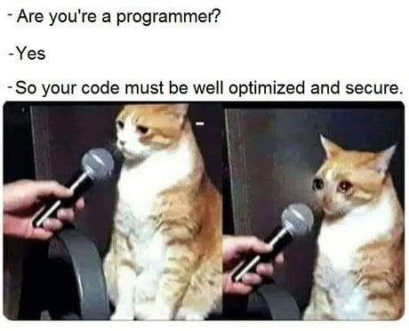
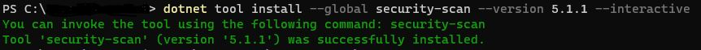
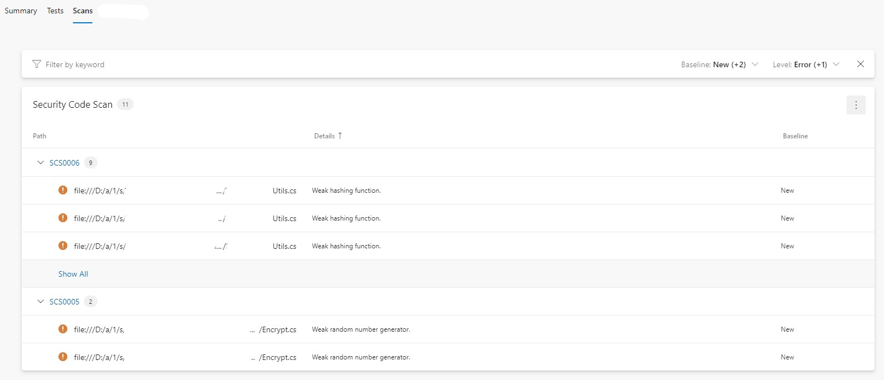

How to Perform Static Code Analysis of .NET Code With Security Code Scan
What is static code analysis and why do I need it?
Developers are doing an important job - we create programs and systems that make life on this planet easier, better and safer. Ideally. But, how do we actually ensure that the code, that these systems and programs are built upon, is actually secure? Though we're developers we're also humans, and humans make mistakes.
Let's say we're developing an online store where users can buy products, pay for them and get them delivered to their doorstep by providing their personal and credit card information. While developing this application we've unintentionally introduced a SQL injection vulnerability which was discovered and exploited by a malicious actor resulting in him/her getting access to application's database and stealing all information about our customers and their credit cards. Well, that sounds pretty scary, don't you think?

What I meant by "unintentionally introduced" is that we can't know or predict everything. There can be many reasons for why a security vulnerability may be introduced in the application code:
- an intern didn't know that the piece of code he/she created introduced a security vulnerability,
- a developer was multi-tasking due to a short deadline, stress and high pressure at work and forgot to check the code for security vulnerabilities,
- a senior developer was performing a code review after exhausting day at work and oversaw a security vulnerability that was introduced as part of a pull request,
and the list goes on…Therefore it's important to have other security tools in place, in addition to manual code review, that can help us analyze the code, detect potentially insecure code and alert us about it BEFORE the code is merged to master. That's where static code analysis (aka. source code analysis) comes in.
Static code analysis which is also known as static application security testing (SAST) is implemented with help of specific tools that analyze the source code and detect security vulnerabilities without executing the code itself (that's why it's called static analysis). SAST is an important part of the implementation phase of Secure SDLC (Software Development Lifecycle) and DevSecOps.
There are lots of SAST tools to choose from, both open-source and commercial ones - depending on the programming language you're coding in, different tools may be available for your application. Today I would like to show one SAST tool that can be used for static code analysis of .NET code - Security Code Scan.
If you would like to know more about SAST and how the analysis is performed, you can check out this article from OWASP: Static Code Analysis.
How to install and use Security Code Scan tool?
Security Code Scan (SCS) is an open-source static code analyzer for .NET code (both .NET Framework and .NET Core) and it attempts to detect vulnerability patterns in C# and VB.NET code according to OWASP Top 10. Source code can be found on GitHub.
SCS can be implemented as a:
- Visual Studio extension: it's a great way to locally test the code you write for security vulnerabilities and get a real-time analytics, as you code. Analysis will happen in the background as IntelliSense and you will get warnings and errors in the "Error list" window, just as any other compilation or build warnings/errors. I would recommend every .NET developer to just have it installed - not only does it give a great benefit of alerting you about potentially insecure code before you even commit any changes, but it will also contribute to making you more aware of security in your coding process.
- NuGet package: you can install SCS as a NuGet package for a specific solution or a project. Analysis will then happen both as part of IntelliSense but also as part of the build. Errors and warnings will also come up in the "Error list" window. This works fine if you have just one project or solution you want to scan, but if you have multiple solutions or projects then you will need to ensure that you add the NuGet package to all of them.
- Standalone runner: i.e. a .NET tool. If you haven't used .NET tools before, you can read more about what those are and how to create a .NET tool in one of my earlier posts: How to distribute console applications easily with .NET tools. This is a recommended installation type for implementation of SAST in CI/CD pipelines. You can also run the .NET tool locally if you want to trigger scanning of your code outside of IDE or solution build step.
The first two options are pretty straightforward to set up so I would like to talk in more detail about the last option and show how SCS can be implemented as a standalone runner in Azure Pipelines in Azure DevOps.
Installation in CI/CD pipeline
Since it's a .NET tool it's just a matter of few commands to get it installed and executed. Here I've created a separate PowerShell script that will install the tool, get all solution files in the repository and run a code analysis on all the discovered solutions, finally producing a scan results report. This way, any time a new solution is added to the repo, it will be automatically included into the SAST step of the build pipeline.
Build tasks in your yaml-file can look like this:
- task: PowerShell@2
displayName: 'Run Security Code Scan'
inputs:
filePath: 'util-scripts\Invoke-StaticCodeScan.ps1'
- task: PublishBuildArtifacts@1
displayName: 'Publish Artifact: Security Code Scan'
inputs:
pathToPublish: 'sast-results.sarif'
artifactName: 'CodeAnalysisLogs'You can take a look at the PowerShell script below. Here, I'm excluding the test projects from scanning since those will not be rolled out to production. I would also like to publish CWE id-s so that I can get more information about the discovered vulnerabilities from Common Weakness Enumeration lists, for example the one from MITRE. Lastly, I would like to dynamically generate a scan result report for all the scanned source code that I will then publish as a build artifact (ref. PublishBuildArtifacts@1 build task above). You can also provide other arguments to the tool in order to customize it's execution, I'll mention more about it in the Local Installation section below.
Write-Output "Installing Security Code Scan..."
dotnet tool install --global security-scan --version 5.1.1
$solutionsToScan = Get-ChildItem -Path $PSScriptRoot/../ -Recurse -ErrorAction SilentlyContinue -Filter *.sln | Select-Object fullname
foreach($sln in $solutionsToScan)
{
Write-Output "Scanning $($sln.FullName) ..."
security-scan $sln.FullName --excl-proj=**/*Test*/** --cwe --export=sast-results.sarif
}If you don't want to create a separate PowerShell script for this, you can simply install and execute CSC as part of the inline PowerShell build task:
- script: |
dotnet tool install --global security-scan --version 5.1.1
security-scan MySolutionFolder/My.Solution.sln --excl-proj=**/*Test*/** --cwe --export=sast-results.sarif
displayName: 'Install and run SCS'
continueOnError: falseLocal installation
You can also install and run Security Code Scan as a .NET tool locally. In the example below, I installed the tool and executed it with the same arguments as the ones used in the build pipeline example above.
dotnet tool install --global security-scan --version 5.1.1 --interactive

PS C:\> security-scan .\My.Solution.sln --excl-proj=**/*Test*/** --cwe --export=sast-report.sarif
╔═╗┌─┐┌─┐┬ ┬┬─┐┬┌┬┐┬ ┬ ╔═╗┌─┐┌┬┐┌─┐ ╔═╗┌─┐┌─┐┌┐┌
╚═╗├┤ │ │ │├┬┘│ │ └┬┘ ║ │ │ ││├┤ ╚═╗│ ├─┤│││
╚═╝└─┘└─┘└─┘┴└─┴ ┴ ┴ ╚═╝└─┘─┴┘└─┘ ╚═╝└─┘┴ ┴┘└┘
.NET tool by Jaroslav Lobačevski v5.1.1.0
Loading solution '.\My.Solution.sln'
Resolve 0:00.0554626 My.Solution.csproj (net5.0)
Resolve 0:00.7575499 My.Solution.Tests.csproj (net5.0)
Finished loading solution '.\My.Solution.sln'
Skipped: C:\My.Solution.Tests.csproj excluded from analysis
Found: C:\MySolutionFolder\Web.config(6,1): warning SCS0023: CWE-554: View state is not encrypted.
Completed in 00:00:09
1 warningsAs I also mentioned earlier, there are several other arguments you can provide to the tool in order to tweak the scanning even more. You can find all the available arguments by running following command:
PS C:\> security-scan -h
╔═╗┌─┐┌─┐┬ ┬┬─┐┬┌┬┐┬ ┬ ╔═╗┌─┐┌┬┐┌─┐ ╔═╗┌─┐┌─┐┌┐┌
╚═╗├┤ │ │ │├┬┘│ │ └┬┘ ║ │ │ ││├┤ ╚═╗│ ├─┤│││
╚═╝└─┘└─┘└─┘┴└─┴ ┴ ┴ ╚═╝└─┘─┴┘└─┘ ╚═╝└─┘┴ ┴┘└┘
.NET tool by Jaroslav Lobačevski v5.1.1.0
Usage:
-w, --excl-warn=VALUE (Optional) semicolon delimited list of warnings to
exclude
--incl-warn=VALUE (Optional) semicolon delimited list of warnings to
include
-p, --excl-proj=VALUE (Optional) semicolon delimited list of glob
project patterns to exclude
--incl-proj=VALUE (Optional) semicolon delimited list of glob
project patterns to include
-x, --export=VALUE (Optional) SARIF file path
-c, --config=VALUE (Optional) path to additional configuration file
--cwe (Optional) show CWE IDs
-t, --threads=VALUE (Optional) run analysis in parallel (experimental)
-n, --no-banner (Optional) don't show the banner
-v, --verbose (Optional) more diagnostic messages
-h, -?, --help show this message and exit
Example:
security-scan my.sln --excl-proj=**/*Test*/** --export=out.sarif --excl-warn=SCS1234;SCS2345 --config=setting.ymlThere are some limitations in the Security Code Scan tool that I've discovered while implementing it in my application that might be relevant for you to be aware of:
- If you're using dual-targeting in your projects (f.ex., targeting both .NET Framework 4.8 and .NET 5.0) then there is no way to choose a single framework to execute code analysis for. Scanning will happen for each framework defined in the project.
- If you have a big solution with quite many projects using project references where the same project is being referenced multiple times, the project will be scanned every time it's referenced. So, there's no way to avoid duplicates as of now. This is a bit unfortunate since for a big solution the tool can start hanging and take hours to complete, resulting in timeouts…A workaround may be to run parallel scan jobs that will scan different solutions simultaneously or add smaller solution files that don't contain a lot of projects and project references. For big solutions I will recommend to execute scanning outside of CI/CD pipelines, in a separate build pipeline on a desired schedule - then you'll not prevent developers from doing their work but still have a procedure in place that will regularly scan the source code and alert you in case any security vulnerabilities are discovered.
How to view and read result report?
You can export scan results into a separate report by providing –export=<REPORT_FILENAME> argument to the tool. In that case a SARIF report will be generated that you can open locally and inspect as well as use specific plug-ins to visualize it, for example, as part of you build in Azure DevOps.
SARIF is The Static Analysis Results Interchange Format and this has been a de facto standard in the industry used to provide output from SAST tools. You can read the specification as well as get more information about available SARIF tools and viewers on the official website: SARIF.
SARIF is based on JSON so you can easily download the report and view it locally in Notepad or IDE of your choice. Let's open the "sast-report.sarif" file I've configured during execution of SCS in the Local Installation section: in "results" section I can see all potential security vulnerabilities that have been discovered by the tool:
"results": [
{
"ruleId": "SCS0023",
"ruleIndex": 0,
"level": "warning",
"message": {
"text": "View state is not encrypted."
},
"locations": [
{
"physicalLocation": {
"artifactLocation": {
"uri": "file:///C:/MySolutionFolder/Web.config"
},
"region": {
"startLine": 6,
"startColumn": 1,
"endLine": 6,
"endColumn": 1
}
}
}
],
"properties": {
"warningLevel": 1
}
}
],Here, we can see the rule ID, warning message, where the warning was discovered and what the warning level is. In the bottom of the file, in "tool" section we can also find some information about the tool itself, like it's name, version, etc.
You can also upload your report to SARIF validator - this can be especially relevant if you would like to customize the tool and add your own rules: SARIF Validator.
Lastly, I would like to show you a pretty neat Azure DevOps extension that can let you visualize your report in a separate tab of your build results page in Azure DevOps. Extension is called "SARIF SAST Scans Tab" and it has been developed by Microsoft DevLabs - you can download it to your Azure DevOps server from Marketplace: SARIF SAST Scans Tab. Once it's downloaded you need to verify that your build pipeline is publishing a SARIF report as a build artifact with a specific name: "CodeAnalysisLogs". Also, as of now, the extension works properly only if you're publishing a scan report artifact with "PublishBuildArtifacts@1" task and not "PublishPipelineArtifact@1" so please, ensure that you're using a proper build task for this.
Once you've verified that the publish task for the SAST report is defined correct and the build has been executed, you will be able to see a new tab called "Scans" - by clicking on it, you'll get a good overview of all the discovered vulnerabilities with relevant information extracted from the report. Now, earlier in this post I've executed Security Code Scan as part of my CI/CD pipeline in Azure DevOps, let's take a look how the report was visualized with the help of SARIF SAST Scans Tab extension:

You can also click on every discovered vulnerability in order to read more about the related analyzer rule and detection logic.
Well, that's what I wanted to share about Security Code Scan tool - in my opinion, the tool is really useful, easy to use and there's a potential to tailor it to your own needs by adding your own rules. I haven't tried customizing the tool just yet but I have some rules in the backlog that I would like to add to SCS so I might share a guide on how to do that at a later point :)
Finally, it's important to mention that SAST tools should not be the only security control in place - these tools cover a limited amount of security vulnerabilities and may result in many false positives as well as the scanning process may get quite time-consuming, especially for bigger solutions. Therefore, it's important to use SAST tools in combination with other security controls like Dynamic Application Security Testing (DAST), third-party dependencies scanning, penetration testing and others. Interactive Application Security Testing (IAST) is pretty new but already promising as a useful addition to SAST and DAST tools.
Additional resources
If you would like to know more about Security Code Scan tool, other available SAST tools and Secure SDLC in general, I can recommend to check some of the links below:
- Security Code Scan tool website: Security Code Scan - static code analyzer for .NET
- List of SAST tools provided by OWASP and Wikipedia
- Great walkthrough from Snyk of what SAST tools are and what differs those from other security testing tools: Static Application Security Testing (SAST)
- Walkthrough of Security Development Lifecycle practices by Microsoft: What are the Microsoft SDL practices?
That's it from me this time, thanks for checking in! If this article was helpful, I'd love to hear about it! You can reach out to me on LinkedIn, GitHub or by using the contact form on this page :)
Stay secure, stay safe.
Till we connect again!